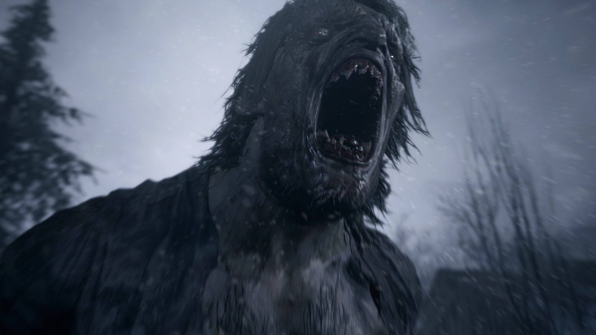
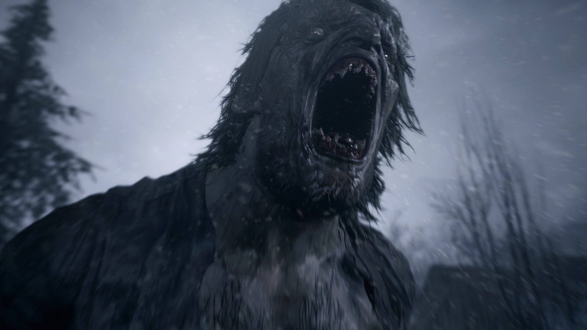

Ethan Winters
Protagonista do jogo. Após ter sua família destruída em Resident Evil 7, Ethan é jogado em um novo pesadelo na vila, enquanto busca respostas sobre o paradeiro de sua filha.
Explore o terror de Resident Evil Village, enfrente criaturas bizarras, descubra segredos sombrios e tente sobreviver como Ethan Winters.
Conhecer a história
Resident Evil Village é o oitavo título principal da franquia. A história acompanha Ethan Winters em uma vila remota e misteriosa, cheia de horrores e experimentos bizarros. O jogo mistura elementos de ação, sobrevivência e terror psicológico em um mundo detalhado e imersivo.
Lançado para diversas plataformas, o jogo se destaca pelos visuais impressionantes, atmosfera intensa e personagens marcantes como Lady Dimitrescu e suas filhas.
Protagonista do jogo. Após ter sua família destruída em Resident Evil 7, Ethan é jogado em um novo pesadelo na vila, enquanto busca respostas sobre o paradeiro de sua filha.
Uma das figuras mais icônicas do jogo. Uma nobre vampírica que governa o castelo local com mãos de ferro e garras afiadas.

Veterano da franquia. Chris reaparece em Village em uma postura mais ambígua, deixando Ethan e os jogadores cheios de dúvidas.
Algumas capturas da atmosfera sombria de Resident Evil Village.

 


Quer receber novidades, teorias e notícias sobre Resident Evil Village? Preencha o formulário abaixo: